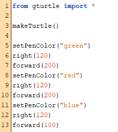
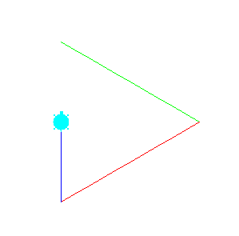

Ein Programm ist eine Folge von Befehlen in einer Programmiersprache. In TigerJython enthält jede Zeile genau einen Befehl. Befehle bestehen aus zwei Teilen: dem Befehlsnamen und einer Klammer, die Klammer kann einen Parameter enthalten. Der Befehlsname bestimmt die Tätigkeit, der Parameterwert den Umfang oder die Art der Tätigkeit.
 
In Python allgemein spricht man eher von Ausdrücken und Funktionen, wobei Funktionen den Befehlen in TigerJython ganz ähnlich sind und in vielen Bereichen Funktion und Befehl synonym verwendet werden.
In PyTamaro können - anders als in TigerJython und wie in Python allgemein - Befehle/Funktionen in Funktionen aufgerufen werden. Da dies schnell unübersichtlich wird, arbeitet man mit zusätzlichen Zeilenschaltungen und Einrückungen. Dazu aber auf anderen Seiten mehr.